Camino Primitivo 2026: calculadora de etapas y planificador de ruta
Calcula tus etapas del Camino Primitivo y planifica tu Camino de Santiago desde Oviedo a Santiago con mapa interactivo, albergues y presupuesto actualizado.
325 kmDistancia
14–15Etapas
Siglo IXOrigen
~6.000 mDesnivel +
Descubre↓
Sobre la ruta
¿Qué es el Camino Primitivo?
El Camino Primitivo es el camino de Santiago más antiguo del mundo. Todo comenzó en el siglo IX cuando el rey asturiano Alfonso II el Casto partió desde la capital del reino, Oviedo, para venerar la tumba del Apóstol Santiago recién descubierta en Galicia. Ese primer viaje regio trazó la ruta que hoy recorren miles de peregrinos cada año.
Declarado Patrimonio Mundial de la UNESCO en 2015 junto al Camino del Norte, el Primitivo atraviesa el corazón montañoso de Asturias con paisajes salvajes que no encontrarás en ninguna otra ruta jacobea: hayedos centenarios, aldeas casi deshabitadas, brañas de montaña y vistas al embalse de Salime que cortan la respiración.
Usa esta guía como tu planificador de etapas y calculadora de etapas del Camino de Santiago. Aquí encontrarás la mejor opción para organizar el Camino Primitivo con distancias reales, albergues actualizados y presupuesto.
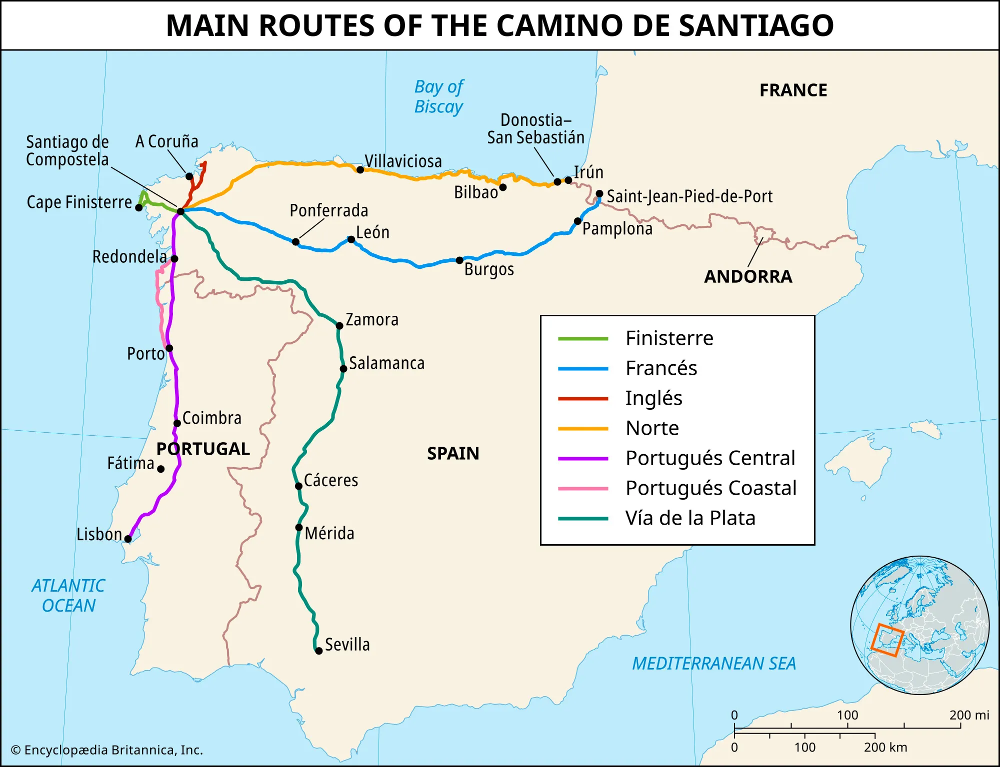
Rutas del Camino de Santiago
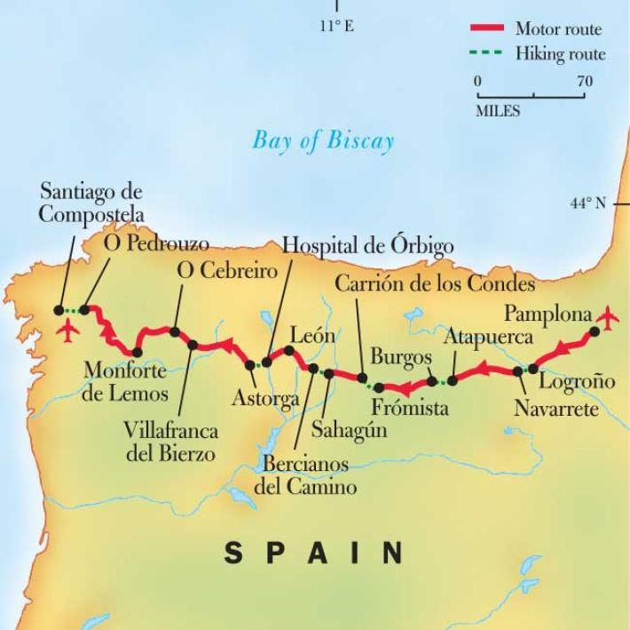
El Camino Francés como referencia
El Primitivo (naranja) frente al Camino Francés (azul)
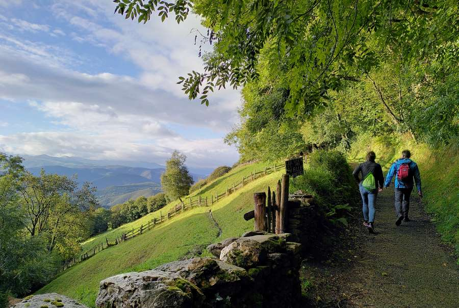
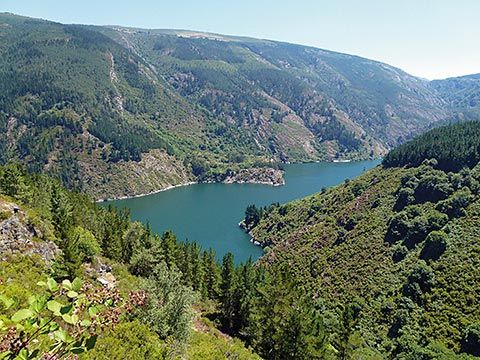
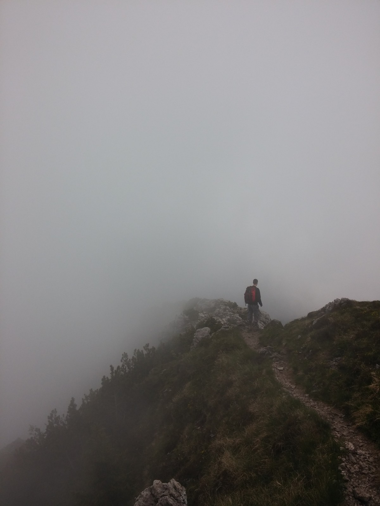
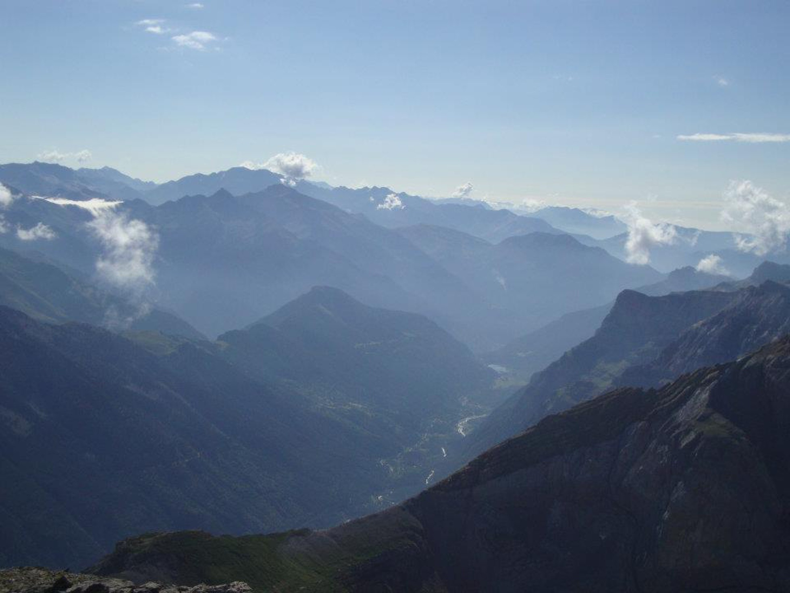
Sendero asturiano · Embalse de Salime · Puerto del Palo en la niebla · Valles de Asturias
🗻
El más exigente
Mayor desnivel acumulado de todas las rutas jacobeas. Etapas de montaña que te ponen a prueba.
🌿
El más salvaje
Aldeas casi deshabitadas, bosques vírgenes y tramos en completa soledad con la naturaleza.
👤
El más solitario
Una fracción de los peregrinos del Francés. Ideal para quien busca introspección y silencio.
🏛️
El más histórico
Patrimonio UNESCO. Siglo IX de historia viva en cada piedra, cruceiro y monasterio.
Cuándo ir
Clima por temporada
El Camino Primitivo puede hacerse durante todo el año, pero la experiencia varía mucho según la época. Asturias y Galicia tienen un clima atlántico: verde, húmedo y templado. Elige la temporada según tu tolerancia al frío y a la lluvia.
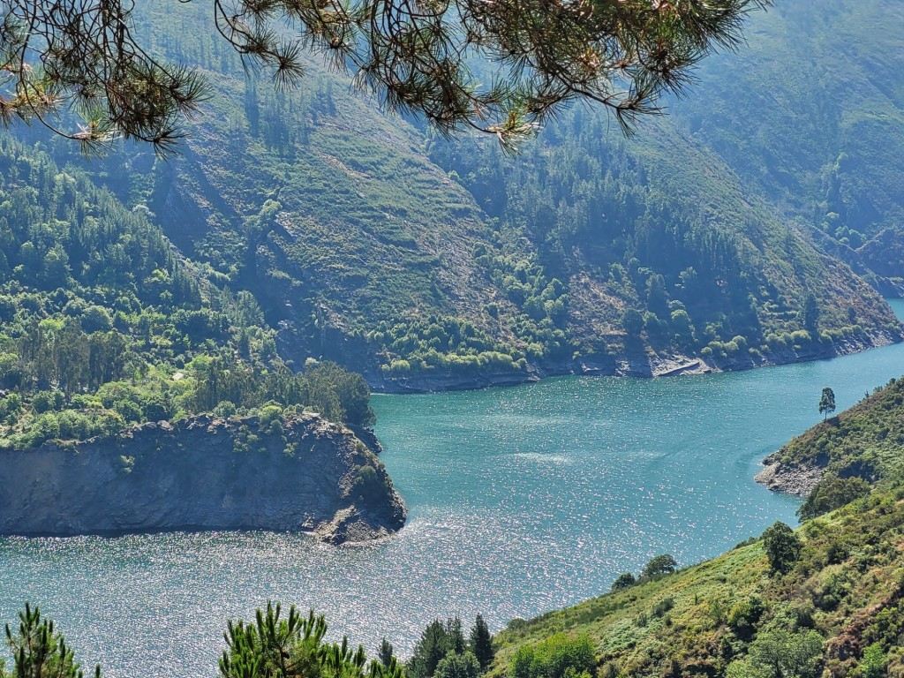
Abril – Junio · La mejor temporada
Los paisajes explotan de verde. Temperaturas frescas perfectas para caminar. Pocos peregrinos comparado con el verano. Mayo y junio son el momento ideal.
10–19°CTemperatura
8–12Días lluvia/mes
BajaAfluencia
⭐⭐⭐⭐⭐Recomendación
💡 Consejo primavera
Lleva chubasquero siempre accesible. En el Puerto del Palo puede haber niebla y temperaturas de 4-8°C incluso en mayo.
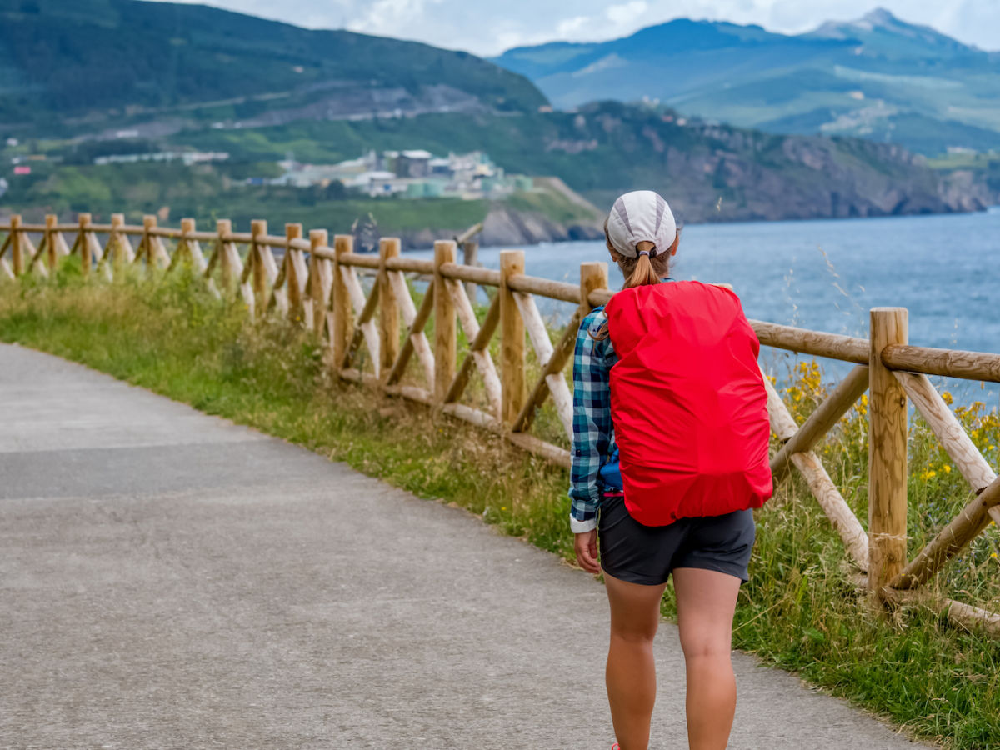
Julio – Agosto · Alta temporada
Los días son más largos y soleados, pero el calor en cotas bajas puede ser intenso. Más peregrinos en el tramo final desde Melide. Reserva albergues con antelación.
16–25°CTemperatura
5–8Días lluvia/mes
MediaAfluencia
⭐⭐⭐⭐Recomendación
⚠️ Consejo verano
Sal siempre antes de las 7h en etapas largas. Lleva crema solar factor 50 y como mínimo 2L de agua para etapas sin fuentes.
Septiembre – Octubre · Temporada dorada
Colores otoñales espectaculares. Temperaturas perfectas. Menos peregrinos que en verano. Septiembre es la segunda mejor opción después de primavera.
9–18°CTemperatura
10–14Días lluvia/mes
Baja–MediaAfluencia
⭐⭐⭐⭐⭐Recomendación
💡 Consejo otoño
En octubre algunos albergues privados cierran. Consulta aperturas antes de salir y lleva saco de dormir más cálido (confort 0°C).
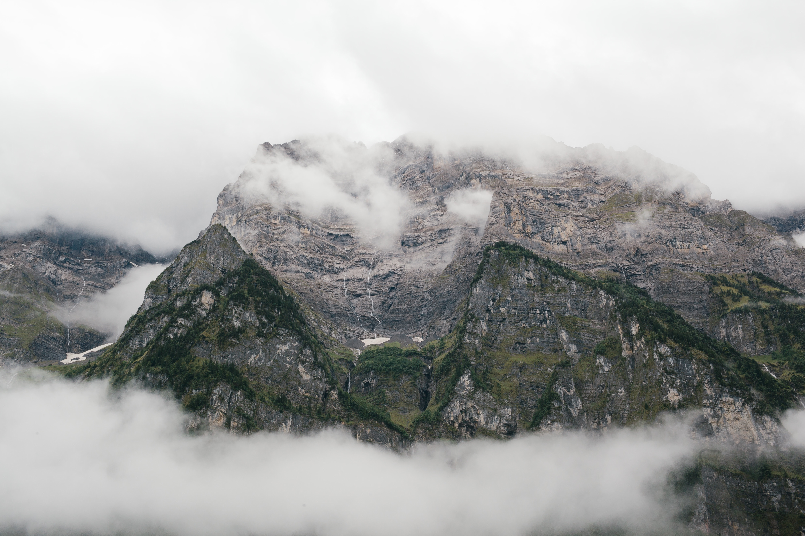
Noviembre – Marzo · Solo para expertos
El Primitivo en invierno es para peregrinos muy experimentados. Nieve en los puertos, albergues cerrados, barro abundante y poca luz. No recomendado para principiantes.
2–12°CTemperatura
15–20Días lluvia/mes
Muy bajaAfluencia
⭐⭐Recomendación
🚨 Aviso invierno
El Puerto del Palo puede estar nevado y ser peligroso. Consulta siempre la AEMET antes de cada etapa montañosa y lleva ropa de abrigo de montaña real.
Tu camino a medida
Planificador de etapas del Camino Primitivo
Introduce tus noches en albergue y el punto de inicio para que esta calculadora de etapas del Camino de Santiago te muestre la ruta óptima. El planificador recomienda etapas, calcula kilómetros, albergues y presupuesto estimado hasta Santiago.
Cómo usar la calculadora de etapas
Selecciona el número de noches disponibles.
Elige tu punto de inicio si no vas desde Oviedo.
Compara kilómetros, etapas y coste de alojamiento.
Recibe alertas si la ruta queda por debajo de 100 km para la Compostela.
🗺️
Calculadora de ruta automática
Introduce tus noches de albergue · el punto de salida se calcula solo
¿Desde dónde empiezas?
🧮
Cómo funcionaCon N noches haces N+1 etapas. El planificador trabaja hacia atrás desde Santiago para decirte exactamente desde dónde salir.
📏
Distancias realesMedia de 21 km/etapa, entre 16 y 26 km. Las etapas 5–6 son más cortas: el Puerto del Palo (600 m de desnivel) agota aunque solo sean 18 km. El día siguiente, 16 km de bajada, es de recuperación.
🏅
Para la CompostelaNecesitas al menos 100 km a pie. Con 5 noches (6 etapas, ~119 km desde Melide) ya cumples. Te avisamos si te quedas corto.
¿Cuántas noches dormirás en albergue?
6noches
6 noches→7 etapas→🎉 Santiago
BaamondeSales desde
175 kmKilómetros
7Etapas
—Llegas a
~76€Alojamiento est.
Etapas de tu camino
⚠️ Tu ruta incluye el Puerto del Palo (etapa 5). La más exigente del camino: 600 m de ascenso, sin fuentes ni bares en toda la etapa. Lleva 2 L de agua y sal antes de las 7h.
ℹ️ Menos de 100 km: con esta configuración no recibirás la Compostela oficial. La Oficina del Peregrino la exige para el tramo de al menos 100 km a pie. Añade más noches para cumplir el requisito.
Ruta en el mapa
Tu camino, paso a paso
El mapa se actualiza automáticamente según las etapas que hayas configurado en el planificador. Haz clic en cualquier marcador para ver los detalles de la etapa.
Planificación
Las 14 etapas del Camino Primitivo
El Camino Primitivo completo desde Oviedo hasta Santiago de Compostela en 14 etapas. Las asturianas son las más exigentes; las gallegas, más suaves. El planificador ofrece una subdivisión en 15 tramos para adaptarse a diferentes ritmos. Haz clic en cualquier etapa para ver los detalles, albergues y cómo volver a casa desde ese punto.
🏠
Tipo de albergueCambia para ver opciones públicas o privadas en cada etapa
🚌
¿Desde dónde vienes?Escribe tu ciudad para ver cómo volver desde cada etapa
💡 Leyenda de dificultad
🟢 Fácil–Media · 🟠 Media–Alta · 🔴 Dura (solo el Puerto del Palo) · 🔵 Galicia (suave)
1
Oviedo → Grado
📍 25 km🟠 MediaAlb. donativo
▼
El arranque desde la Catedral de San Salvador marca el inicio de la primera peregrinación jacobea documentada. La etapa discurre mayoritariamente por sendas rurales con desniveles frecuentes. Atención: los primeros 20 km no hay bares ni tiendas, lleva comida y agua desde Oviedo. La subida final a Villapañada puede sorprender a piernas frescas.
🏠 Alb. Villa de Grado (donativo) · Alb. La Quintana, Grado: ~14€
Etapa más agradable del inicio. Bosques de castaños y eucaliptos, aldeas tranquilas. El punto más destacado es el Monasterio de Santa María de Cornellana (siglo XI), uno de los conjuntos románicos más bellos de Asturias. Salas es una villa con servicios completos, buen ambiente y la impresionante Torre de los Valdés.
🏠 Monasterio de Cornellana (público): ~8€ · Casas rurales desde 25€
Paisaje asturiano clásico con subidas y bajadas constantes pero manejables. Paso por el Monasterio de Obona, fundado en el siglo VIII según la tradición. Tineo tiene todo lo necesario: supermercado, farmacia y buenos bares para reponer fuerzas.
🏠 Alb. Mater Christi, Tineo (público): ~5€ · Alb. privados desde 11€
Entrada en el terreno serio del Primitivo. La variante de Los Hospitales (recomendada con buen tiempo) ofrece vistas espectaculares de la montaña asturiana pero añade desnivel considerable. Con lluvia o niebla, toma la variante por Pola directamente. Descansa bien esta noche porque mañana es la etapa más dura.
🏠 Alb. Municipal Pola de Allande: ~5€ · Alb. privado Los Hospitales: ~10€
El Puerto del Palo. La etapa más temida del Camino Primitivo. Los primeros 10 km ascienden desde 600 hasta 1.200 metros. Sin fuentes ni bares en todo el recorrido — lleva mínimo 2 litros de agua y comida desde el inicio. Evítala si ha llovido los días previos: el camino se convierte en un barrizal resbaladizo. Sal antes de las 7h. Las vistas desde el Puerto merecen el esfuerzo.
🚨 Sin fuentes en toda la etapa
Provisionate bien desde Pola de Allande. Lleva 2L de agua mínimo.
🏠 Alb. de La Mesa (público): ~5€ · Alb. Berducedo (privados): 11–15€
Etapa más corta, con descenso continuo al embalse de Salime. Las rodillas lo notarán. El embalse al llegar es impresionante. Grandas de Salime tiene supermercado: provisionate bien porque mañana entras en Galicia por tramos con pocos servicios.
🏠 Alb. Municipal El Salvador, Grandas: ~5€ · Alb. privados desde 12€
Grandas de Salime → A Fonsagrada 🇪🇸 Entrada en Galicia
📍 25 km🟠 MediaAlb. 6€
▼
Cruzas a Galicia por el Alto del Acebo. El paisaje cambia radicalmente: hayedos, niebla frecuente y un silencio que te envuelve. Las aldeas gallegas casi despobladas tienen un sabor medieval único. A Fonsagrada alberga el único camping oficial del Camino Primitivo.
🏠 Alb. Casa de Pasarín, A Fonsagrada (público): ~6€ · Camping A Fonsagrada (tienda de campaña): ~10€/parcela
Galicia rural pura. Calzadas empedradas milenarias, cruceiros con flores frescas, hórreos de piedra. El terreno es mucho más amable que en Asturias. Aldeas con bar donde tomar el primer café gallego bien cargado. El descanso mental empieza aquí.
🏠 Alb. O Cádavo Baleira (Xunta): ~8€ · Alb. privados desde 10€
La etapa más larga de la parte gallega, pero con terreno suave. La llegada a Lugo y su muralla romana del siglo III es uno de los momentos más emocionantes del camino. Date un capricho esa noche: pulpo a feira en el casco histórico, que lo mereces.
🏠 Alb. Xunta de Lugo: ~8€ · Varios hostales y hoteles desde 25€
Etapa tranquila y muy agradable. Pistas y caminos rurales cómodos, perfil casi plano. Día perfecto para recuperar piernas y disfrutar de la Galicia más auténtica sin prisas.
🏠 Alb. Xunta As Xeisas (San Román): ~6€ · Alb. Rectoral de Ferreiros: ~12€
El Primitivo se une al Camino Francés en Melide. Notarás el cambio inmediatamente: de repente hay peregrinos por todas partes. Melide es famosa por tener el mejor pulpo de Galicia. Obigatorio parar en Casa Ezequiel.
🏠 Alb. Xunta de Melide: ~6€ · Alb. privados 12-15€
Etapa corta y cómoda, ideal para recuperar después de los tramos largos. Camino compartido con el Francés, así que notarás mucha más gente. Arzúa es famosa por su queso: el queso de Arzúa-Ulloa con denominación de origen. Aprovecha la etapa corta para descansar y disfrutar de la gastronomía gallega.
🏠 Alb. Xunta de Arzúa: ~6€ · Varias opciones privadas 12-15€
Penúltima etapa por bosques de eucaliptos y pequeñas aldeas. Terreno suave con ligeras ondulaciones. O Pedrouzo es el último punto de pernocta antes de Santiago. Aprovecha para cenar bien y preparar el espíritu: mañana llegas a la Plaza del Obradoiro.
🏠 Alb. Xunta O Pedrouzo: ~6€ · Alb. privados desde 13€
La etapa final. Eucaliptos, piedra gallega y flechas amarillas por todas partes. La emoción crece con cada kilómetro. El Monte do Gozo (Monte del Gozo) te regala la primera vista de las torres de la Catedral. La llegada a la Plaza del Obradoiro es el momento más emotivo del camino. Recoge la Compostela en la Oficina del Peregrino (Rúa Carretas 33, a 100 m de la Catedral). ¡Ultreia!
🎉 ¡Lo has conseguido!
No olvides recoger tu Compostela en la Oficina del Peregrino. Abierta de 8:00 a 20:00 todos los días. Necesitas tu credencial sellada.
🏠 Alb. Xunta de Santiago: ~10€ · Varias opciones privadas 15-20€
La regla de oro del Primitivo: la mochila no supera el 10% de tu peso corporal. Selecciona tu temporada y la lista se adapta — algunos items se vuelven críticos según la época.
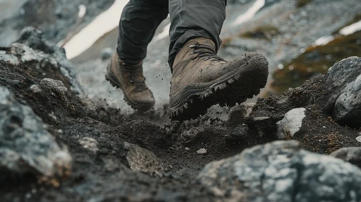
Terreno asturiano típico
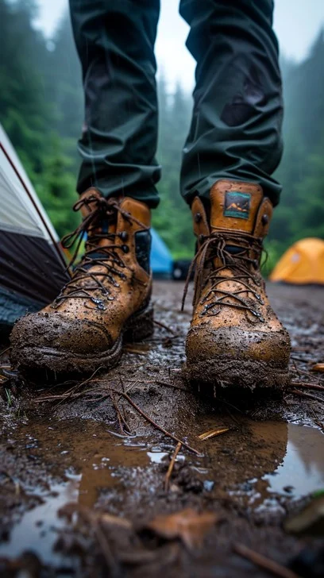
El barro es parte del camino
Voy en:
❌ No llevas: Vaqueros, toalla de algodón, más de 2 camisetas, libros físicos, secador de pelo, ni nada "por si acaso". Cada gramo tiene un coste.
👟 Calzado y pies
✓Botas trekking impermeables caña media ESENCIALPRIORITARIOOpcional
✓App Gronze o Buen Camino (offline)PRIORITARIOOpcional
✓Efectivo (pueblos sin cajero)PRIORITARIOOpcional
Pernoctación libre
¿Puedo llevar tienda de campaña?
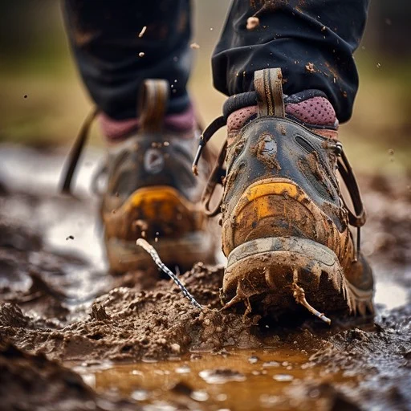
Es una de las preguntas más frecuentes. La respuesta es sí, con matices importantes. La acampada libre formal está prohibida en España, pero la pernoctación itinerante —montar la tienda entre el anochecer y el amanecer, lejos de núcleos urbanos, sin dejar rastro— es una zona gris legal que en la práctica se tolera si eres discreto.
✓ Ventajas
Libertad total de horarios y ritmo
Silencio absoluto, sin ronquidos
Dormir bajo las estrellas asturianas
Ahorro en noches que funcione
Autosuficiencia y aventura pura
✗ Inconvenientes
+1,5-2 kg extra en mochila
Solo un camping oficial en la ruta
Sin ducha ni lavandería
Lluvia frecuente en Asturias
Etapas solitarias sin agua
Pierdes el ambiente peregrino
💡 La estrategia inteligente
Alterna albergues con tienda. Duerme en albergue cuando necesites ducha y lavandería (cada 2-3 días); acampa cuando el tiempo y el lugar lo permitan. Si llevas tienda, busca una ultraligera de 700-900g. La regla: monta después del anochecer, recoge antes del amanecer, fuera de 500 m de cualquier pueblo, deja zero rastro.
Costes reales
Calcula tu presupuesto
Ajusta los parámetros según cómo quieras hacer tu camino. Los precios son datos reales de albergues y servicios actualizados.
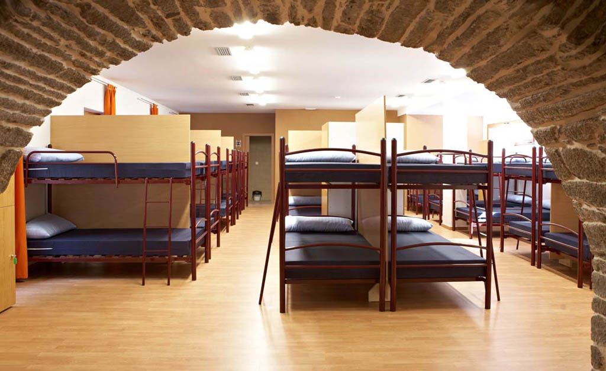
Albergue histórico
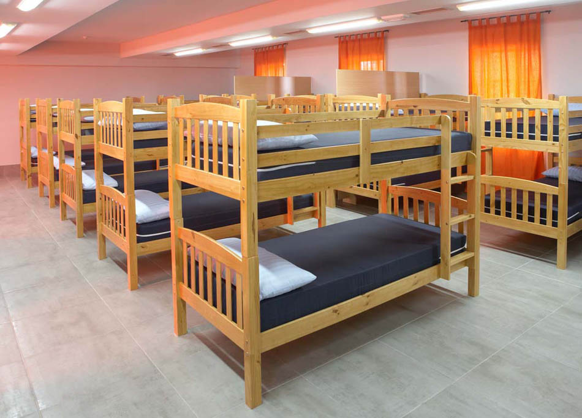
Dormitorio compartido
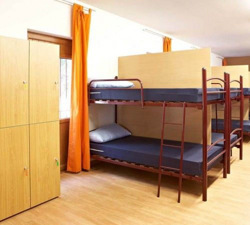
Literas típicas
42€Por día
588€Total camino
EstándarCategoría
* No incluye transporte de ida/vuelta ni equipamiento inicial. Precios orientativos 2025.
Preguntas frecuentes
Preguntas frecuentes del Camino Primitivo
Resuelve tus dudas más importantes sobre el Camino Primitivo, el calculador de etapas, el planificador de rutas y la preparación para llegar a Santiago de Compostela.
¿Cuánto dura el Camino Primitivo completo?
▼
El Camino Primitivo completo desde Oviedo hasta Santiago tiene aproximadamente 321 km y se divide habitualmente en 14 etapas (o 15 si subdivides el tramo O Cádavo–Lugo). A un ritmo normal de 20-25 km/día se tarda entre 13 y 15 días. Si quieres hacer solo el tramo hasta Lugo, son unos 8-9 días. Si empiezas desde Lugo directamente, son 5-6 etapas más suaves.
¿Es difícil el Camino Primitivo para alguien sin experiencia?
▼
El Primitivo es el camino de Santiago más exigente físicamente. No es imposible para principiantes, pero requiere preparación previa. Recomendamos haber hecho al menos otro camino de menos desnivel (como el Portugués) o tener experiencia en senderismo de montaña. Entrena con desnivel durante al menos 4-6 semanas antes, no solo en llano.
¿Hay que reservar albergues con antelación?
▼
En temporada baja (noviembre-mayo) no suele ser necesario reservar, ya que la afluencia es baja. En temporada alta (junio-septiembre) conviene reservar los albergues privados, especialmente en Lugo, Melide y el tramo final hacia Santiago. Los albergues públicos de la Xunta no admiten reservas y funcionan por orden de llegada.
¿Puedo hacer el Camino Primitivo en una semana?
▼
Una semana es insuficiente para hacer el recorrido completo (321 km). Lo más habitual es hacer el tramo más espectacular: Oviedo hasta Lugo en 7-8 días, que es la parte más salvaje y montañosa. Otra opción es empezar desde Lugo y hacer las 6 etapas finales hasta Santiago, aunque se pierde lo mejor del camino.
¿Cómo usar la calculadora de etapas del Camino Primitivo?
▼
Indica cuántas noches tienes, selecciona tu punto de partida y el planificador calcula la ruta. Verás cuántas etapas debes hacer, los kilómetros totales, el coste estimado de albergues y avisos si la ruta no suma los 100 km mínimos para la Compostela.
¿Puedo empezar el Camino Primitivo desde Lugo con esta calculadora?
▼
Sí. En el modo 'tramo' puedes elegir otro inicio, como Lugo o Arzúa, y la calculadora ajusta las etapas y el número de noches según tu punto de salida. Así puedes usarla tanto para el Camino completo como para tramos parciales.
¿Qué diferencia hay con el Camino Francés?
▼
El Camino Francés tiene unos 200.000 peregrinos al año, el Primitivo apenas unos 10.000-15.000. Esto significa más soledad, albergues menos masificados y tramos de gran intimidad con la naturaleza. A cambio, el Primitivo es más exigente físicamente, tiene menos servicios en algunos tramos y requiere más planificación. Si buscas experiencia auténtica sin multitudes, el Primitivo es claramente superior.
¿Cómo llegar a Oviedo para empezar el Camino?
▼
Oviedo tiene muy buenas conexiones. En tren: AVE y Avant desde Madrid (~3h), trenes desde Barcelona y otras ciudades. En avión: el aeropuerto de Asturias (OVD) tiene vuelos directos desde Madrid, Barcelona, Málaga, Bilbao y alguna ruta internacional. En bus: ALSA conecta Oviedo con toda España. Al llegar, el inicio del camino está a pocos minutos andando desde la Catedral de San Salvador.
¿Se puede acampar en el Camino Primitivo?
▼
La acampada libre formal está prohibida en España, pero la pernoctación itinerante (montar la tienda entre el anochecer y el amanecer, fuera de núcleos urbanos y sin dejar rastro) está en zona gris legal y en la práctica se tolera. Solo hay un camping oficial en toda la ruta del Primitivo: en A Fonsagrada. Dado el peso extra y la lluvia frecuente, los albergues públicos (5–8€) suelen ser la opción más sensata.
Si hago el camino por tramos en diferentes años, ¿puedo obtener la Compostela?
▼
Sí, y es una opción cada vez más habitual. La Oficina del Peregrino acepta peregrinos que hacen el camino por etapas a lo largo del tiempo, siempre que se cumplan estas condiciones:
La credencial es la clave. Debes usar la misma credencial (o credenciales sucesivas) en todos los tramos, sellándola en cada albergue, iglesia o bar del camino. Los sellos deben demostrar una progresión lógica de la ruta — no puedes hacer el tramo final si antes no tienes sellada la ruta anterior en orden.
Los últimos 100 km sí o sí a pie y de una vez. Da igual si llevas 3 años haciendo tramos: el último tramo de 100+ km hasta Santiago debe hacerse en una sola peregrinación continua, sin saltos. Normalmente eso significa entrar como mínimo desde Melide (en el Primitivo, desde unos 119 km antes).
No hay caducidad oficial. La Oficina del Peregrino no establece un plazo máximo entre tramos, aunque recomiendan no dejar pasar demasiado tiempo sin documentarlo. Guarda bien tu credencial con los sellos anteriores.
En resumen: haz el primer tramo, sella bien la credencial, guárdala y retómalo donde lo dejaste. Cuando llegues a Santiago con los últimos 100+ km acumulados y sellados, la Compostela es tuya.
Aviso legal y Política de privacidad
Este sitio web es un recurso informativo sobre el Camino Primitivo de Santiago de Compostela. La información se ofrece con fines orientativos y no sustituye la consulta de fuentes oficiales.
Cookies y publicidad: Este sitio utiliza cookies propias para recordar tus preferencias y cookies de terceros (Google AdSense, Google Analytics) para personalizar anuncios y analizar el tráfico. Puedes gestionar tus preferencias de cookies en cualquier momento desde la configuración de tu navegador.
Datos personales: No recopilamos datos personales directamente. Los servicios de terceros integrados (Google) pueden recopilar datos de navegación anónimos conforme a sus propias políticas de privacidad.
Propiedad intelectual: Los textos y el diseño de esta web son propiedad de sus autores. Las imágenes utilizadas son de libre uso y los datos de rutas provienen de OpenStreetMap.
Este sitio utiliza cookies propias y de terceros (incluidas las de Google AdSense) para mejorar tu experiencia y mostrar publicidad relevante. Puedes aceptar o rechazar su uso.
Política de privacidad